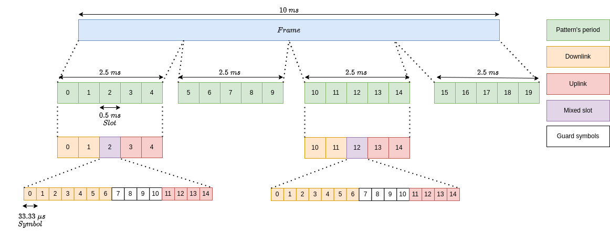

Rajeev Gangula, Chandra R. Murthy, Rakesh Mundlamuri, Vinay Kulkarni, Venkatareddy Akumalla
December 15, 2025
What do we cover in the OAI Hands-On Session?
The aim of this tutorial is to:
sudo apt-get update
sudo apt-get install gitMake sure to select yes when the Wireshark installation asks you whether non-superusers should be able to capture packets. Otherwise, you will have to run in sudo mode.
sudo add-apt-repository ppa:wireshark-dev/stable
sudo apt update
sudo apt install -y git net-tools wiresharksudo apt install -y iperf3sudo apt install -y apt-transport-https ca-certificates curl software-properties-common
curl -fsSL https://download.docker.com/linux/ubuntu/gpg | sudo apt-key add -
sudo add-apt-repository "deb [arch=amd64] https://download.docker.com/linux/ubuntu $(lsb_release -cs) stable"
sudo apt update
sudo apt install -y docker docker-ceAdd your username to the docker group, otherwise you will have to run in sudo mode.
sudo usermod -a -G docker $(whoami)Now, close the terminal tab and re-open it.
clone the repository
git clone https://github.com/RajeevGa/ieee_ants2024_oai_tutorial.git
cd ieee_ants2024_oai_tutorial/cnIf you dont have a docker account, create a docker account in docker signup
Login to docker
Enter your password
Now, pull the 5G core docker images
start core network
watch status of the core network
All the docker containers should be healthy
Open a new ssh terminal and clone the ran repository
compile the gNB and nrUE
cd ~/openairinterface5g/cmake_targets/ran_build/build
sudo -E ./nr-softmodem --rfsim -O ~/ieee_ants2024_oai_tutorial/ran/conf/gnb.sa.band78.106prb.rfsim.confVerify that it is connected: you should see the following output at gNB:
[NR_RRC] [DL] (cellID bc614e, UE ID 1 RNTI c40a) Generate RRCReconfiguration (bytes 307, xid 3)
[RRC] UE 1: PDU session ID 10 modified 1 bearers
[NR_RRC] [UL] (cellID bc614e, UE ID 1 RNTI c40a) Received RRCReconfigurationComplete
[NR_RRC] msg index 0, pdu_sessions index 0, status 2, xid 3): nb_of_pdusessions 1, pdusession_id 10, teid: 2817854240
[NR_RRC] NGAP_PDUSESSION_SETUP_RESP: sending the messageand nrUE:
[NR_RRC] Logical Channel UL-DCCH (SRB1), Generating RRCReconfigurationComplete (bytes 2)
[OIP] Interface oaitun_ue1 successfully configured, IPv4 10.0.0.7, IPv6 (null)Correspondingly, an interface should have been brought up:
oaitun_ue1: flags=209<UP,POINTOPOINT,RUNNING,NOARP> mtu 1500
inet 10.0.0.7 netmask 255.255.255.0 destination 10.0.0.7
inet6 fe80::60bd:b117:1bb0:47c4 prefixlen 64 scopeid 0x20<link>
unspec 00-00-00-00-00-00-00-00-00-00-00-00-00-00-00-00 txqueuelen 500 (UNSPEC)
RX packets 0 bytes 0 (0.0 B)
RX errors 0 dropped 0 overruns 0 frame 0
TX packets 5 bytes 240 (240.0 B)
TX errors 0 dropped 0 overruns 0 carrier 0 collisions 0Some other things to check: - You see the RA procedure of the UE in the gNB logs
Log the traces using tcpdump as follows
sudo tcpdump -i oai-cn5g -w monolithic.pcapoaitun_ue1 using ifconfig192.168.70.135 is the IP address of the oai-ext-dn container.ping -I oaitun_ue1 192.168.70.135 # from host, "UL", to oai-ext-dn
docker exec -it oai-ext-dn ping <UE IP address> # from container, "DL"oai-ext-dn (in Docker) and the UE (running locally)docker exec -it oai-ext-dn bash
iperf3 -siperf3 -B <UE IP ADDRESS> -c 192.168.70.135 -u -b 50M -R # DL
iperf3 -B <UE IP ADDRESS> -c 192.168.70.135 -u -b 20M # ULCreate a UE config file ue2.conf with the following structure.
uicc0 = {
imsi = "001010000000002";
key = "fec86ba6eb707ed08905757b1bb44b8f";
opc= "C42449363BBAD02B66D16BC975D77CC1";
dnn= "oai";
nssai_sst=1;
}Add this UE infomation to the core database in cn/database/oai_db.sql
Add the imsi, key and opc infomation of the UE to the AuthenticationSubscription table as follows
INSERT INTO `AuthenticationSubscription` (`ueid`, `authenticationMethod`, `encPermanentKey`, `protectionParameterId`, `sequenceNumber`, `authenticationManagementField`, `algorithmId`, `encOpcKey`, `encTopcKey`, `vectorGenerationInHss`, `n5gcAuthMethod`, `rgAuthenticationInd`, `supi`) VALUES
('001010000000002', '5G_AKA', 'fec86ba6eb707ed08905757b1bb44b8f', 'fec86ba6eb707ed08905757b1bb44b8f', '{\"sqn\": \"000000000000\", \"sqnScheme\": \"NON_TIME_BASED\", \"lastIndexes\": {\"ausf\": 0}}', '8000', 'milenage', 'C42449363BBAD02B66D16BC975D77CC1', NULL, NULL, NULL, NULL, '001010000000002');Add the imsi, dnn and nssai_sst infomation of the UE to the SessionManagementSubscriptionData table as follows
INSERT INTO `SessionManagementSubscriptionData` (`ueid`, `servingPlmnid`, `singleNssai`, `dnnConfigurations`) VALUES
('001010000000002', '00101', '{\"sst\": 1, \"sd\": \"FFFFFF\"}','{\"oai\":{\"pduSessionTypes\":{ \"defaultSessionType\": \"IPV4\"},\"sscModes\": {\"defaultSscMode\": \"SSC_MODE_1\"},\"5gQosProfile\": {\"5qi\": 6,\"arp\":{\"priorityLevel\": 15,\"preemptCap\": \"NOT_PREEMPT\",\"preemptVuln\":\"PREEMPTABLE\"},\"priorityLevel\":1},\"sessionAmbr\":{\"uplink\":\"1000Mbps\", \"downlink\":\"1000Mbps\"},\"staticIpAddress\":[{\"ipv4Addr\": \"10.0.0.3\"}]},\"ims\":{\"pduSessionTypes\":{ \"defaultSessionType\": \"IPV4V6\"},\"sscModes\": {\"defaultSscMode\": \"SSC_MODE_1\"},\"5gQosProfile\": {\"5qi\": 2,\"arp\":{\"priorityLevel\": 15,\"preemptCap\": \"NOT_PREEMPT\",\"preemptVuln\":\"PREEMPTABLE\"},\"priorityLevel\":1},\"sessionAmbr\":{\"uplink\":\"1000Mbps\", \"downlink\":\"1000Mbps\"}}}');Restart the 5G core and use the config file ue2.conf while running OAI UE
The TDD pattern can be found in the ran config file, an example TDD pattern with a periodicity 5ms can be seen below
# dl_UL_TransmissionPeriodicity
# 0=ms0p5, 1=ms0p625, 2=ms1, 3=ms1p25, 4=ms2, 5=ms2p5, 6=ms5, 7=ms10
dl_UL_TransmissionPeriodicity = 6; # periodicity of the TDD Pattern
nrofDownlinkSlots = 7; # DL slots per each TDD period
nrofDownlinkSymbols = 6; # DL symbols in a mixed slot
nrofUplinkSlots = 2; # UL slots per each TDD period
nrofUplinkSymbols = 4; # UL symbols in a mixed slot
Note: The subcarrier spacing choosen for the above mentioned configurations is 30 KHz
This can be configured as per our requirements, for example a TDD pattern with a periodicity 2.5ms can be seen below
# dl_UL_TransmissionPeriodicity
# 0=ms0p5, 1=ms0p625, 2=ms1, 3=ms1p25, 4=ms2, 5=ms2p5, 6=ms5, 7=ms10
dl_UL_TransmissionPeriodicity = 5; # periodicity of the TDD Pattern
nrofDownlinkSlots = 2; # DL slots per each TDD period
nrofDownlinkSymbols = 6; # DL symbols in a mixed slot
nrofUplinkSlots = 2; # UL slots per each TDD period
nrofUplinkSymbols = 4; # UL symbols in a mixed slot
Excercise: Perform iperf tests in both DL and UL. What do you observe?
Change the bandwidth to 20MHz configuration
Parameters that need to configured in the ran configuration file are
absoluteFrequencySSB = 640704; # SSB GSCN
dl_carrierBandwidth = 51;
ul_carrierBandwidth = 51;
initialDLBWPlocationAndBandwidth = 13750; # RIV
initialULBWPlocationAndBandwidth = 13750; # RIVTo run gNB
sudo -E ./nr-softmodem --rfsim -O ~/ieee_ants2024_oai_tutorial/ran/conf/gnb.sa.band78.51prb.rfsim.confTo run UE
sudo ./nr-uesoftmodem -r 51 --numerology 1 --band 78 -C 3609300000 --rfsim --ssb 228 -O ~/ieee_ants2024_oai_tutorial/ran/conf/ue.confResources for calculating SSB GSCN and resources for calculating RIV
similarly, a configuration file for 100MHz has been provided gnb.sa.band78.273prb.rfsim.conf
To run gNB
sudo -E ./nr-softmodem --rfsim -O ~/ieee_ants2024_oai_tutorial/ran/conf/gnb.sa.band78.273prb.rfsim.confTo run UE
sudo ./nr-uesoftmodem -r 273 --numerology 1 --band 78 -C 3649260000 --rfsim --ssb 516 -O ~/ieee_ants2024_oai_tutorial/ran/conf/ue.confTo start CU:
cd ~/openairinterface5g/cmake_targets/ran_build/build
sudo -E ./nr-softmodem -O ~/ieee_ants2024_oai_tutorial/ran/conf/gnb-cu.sa.f1.confTo start DU:
cd ~/openairinterface5g/cmake_targets/ran_build/build
sudo -E ./nr-softmodem --rfsim -O ~/ieee_ants2024_oai_tutorial/ran/conf/gnb-du.sa.band78.106prb.rfsim.confRun the UE:
cd ~/openairinterface5g/cmake_targets/ran_build/build
sudo -E ./nr-uesoftmodem -r 106 --numerology 1 --band 78 -C 3619200000 --rfsim --ssb 516 -O ~/ieee_ants2024_oai_tutorial/ran/conf/ue.confTo start gNB:
cd ~/openairinterface5g/cmake_targets/ran_build/build
sudo -E ./nr-softmodem --rfsim -O ~/ieee_ants2024_oai_tutorial/ran/conf/gnb.sa.band78.106prb.rfsim.confTo start UE1:
cd ~/openairinterface5g/cmake_targets/ran_build/build
sudo ~/ieee_ants2024_oai_tutorial/ran/multi-ue.sh -c1 -e
sudo -E ./nr-uesoftmodem -r 106 --numerology 1 --band 78 -C 3619200000 --rfsim -O /home/rakeshmundlamuri7/ieee_ants2024_oai_tutorial/ran/conf/ue1.conf --rfsimulator.serveraddr 10.201.1.100To start UE2:
cd ~/openairinterface5g/cmake_targets/ran_build/build
sudo ~/ieee_ants2024_oai_tutorial/ran/multi-ue.sh -c2 -e
sudo -E ./nr-uesoftmodem -r 106 --numerology 1 --band 78 -C 3619200000 --rfsim -O /home/rakeshmundlamuri7/ieee_ants2024_oai_tutorial/ran/conf/ue2.conf --rfsimulator.serveraddr 10.202.1.100To login to ue1 namespace
sudo ip netns exec ue1 bashTo login to ue1 namespace
sudo ip netns exec ue2 bashYou can now perform ping and iperf tests
ping from UE1
ping -I oaitun_ue1 192.168.70.135 # from host, "UL", to oai-ext-dnping from UE2
ping -I oaitun_ue1 192.168.70.135 # from host, "UL", to oai-ext-dnTo remove the namespaces
sudo ~/ieee_ants2024_oai_tutorial/ran/multi-ue.sh -d1 -d2